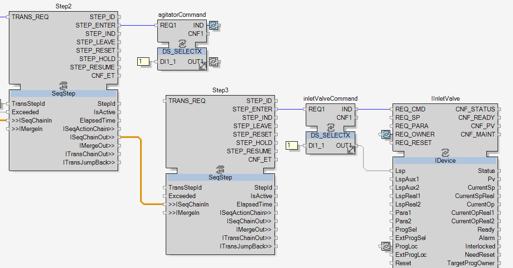
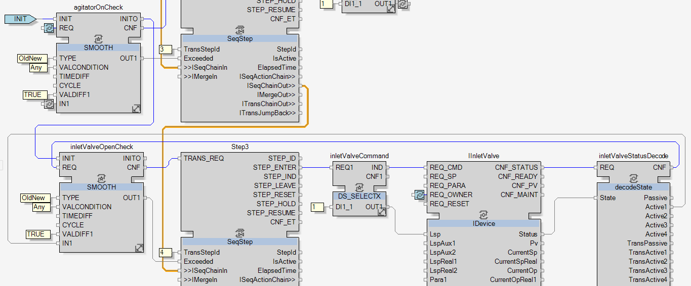

Opening Inlet Valve Step
To start the development of this third step, add a new SeqStep function block, name it Step3 and link Step2.ISeqChainOut to Step3.ISeqChainIn.

|
NOTE:
As defined in the topic Filling Sequence Definition, this step commands the inlet valve to open. |
To open the inlet valve, the same process will be used again, a DS_SELECTX function block, named inletValveCommand, will send the open command, here the constant 1, to the inlet valve adapter.


|
The command for opening the inlet valve is done. To complete this third step, the transition condition now has now to be developed. |
As defined in the topic Filling Sequence Definition, the transition condition of this third step is to wait until the inlet valve is opened.
To detect this change in the status of the inlet valve, the same process as done in the topic Turning On the Agitator Step will be used:
-
Add a decodeState function block, name it inletValveStatusDecode and link it as previously done to IAgitator.
-
Add a SMOOTH function block, name it inletValveOpenCheck and give it the same constant value as agitatorOnCheck.
-
Link inletValveOpenCheck as follows:
Variable Port Linked INIT agitatorOnCheck.INITO: A series of initialization is created this way, for the same reason as previously with the DS_SELECTX series. REQ inletValveStatusDecode.CNF IN1 inletValveStatusDecode.IN1 CNF Step3.TRANS_REQ OUT1 Step3.Exceeded -
Add the constant 4 to Step3.TransStepId.

|
|
The development of the third step is now completed.
Cross reference the links between inletValveCommand and IInletValve, between inletValveStatusDecode and inletValveOpenCheck, between agitatorOnCheck and inletValveOpenCheck and then move to the next step. |